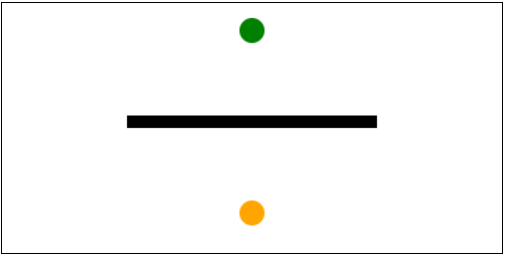

Q3 Animation - SET 3
Q1. Write the code using Canvas API for circles and RequestAnimationFrame to create the following animation. The green ball moves down from top center until it hits the black rectangle (y=80) and the continues to bounce back up. The orange ball moves up from bottom center until it also hits the black rectangle at y = 110 and starts to go down again as shown in the animated GIF. The radius of both the balls is 10.
Note that the animation must be continuous.
[20 marks]
